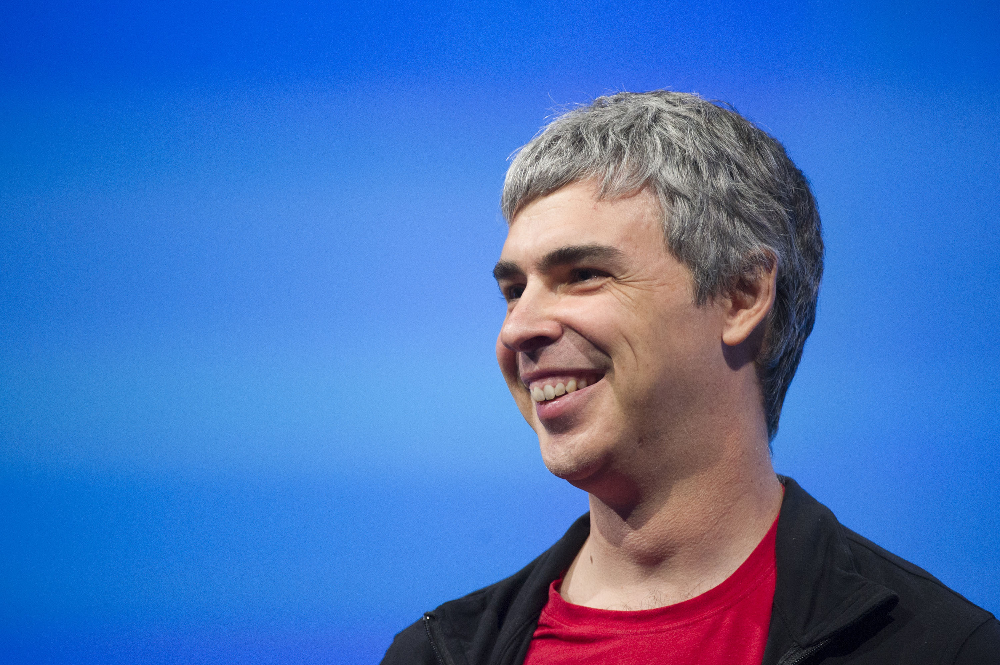

Larry page is an American computer scientist and best known for co founding Google Larry page was born on March 26,1976 In Lansing,Michagan, United States. His parents were Jewish and Larry had no Formal religon. His father was a computer Scientist and a teacher for computer Science. He became so intressted in computer sicence that he was the first kid in his elementry school to turn in an asginment from a word processor. He even wanted to start his own company as well when he was 12. He went to East Lansing High School graduating there in 1991. He went to the univirsity of Michagan with honors and master of Sicence from Sanford Unitvirsity as well.
Ever since he was in Sanford Univirsity he wanted to create a search engine. Larry and his friend Sergey learned that they could bulid a far supieior engine with the already existing ones that's what they did with google Larry Page also helped to create other products like the chromebook and he is a investor in Tesla. He was a ceo of Alphabet from Augest 10th,2015 and then stepped down on March 2019. One of his most famous quotes that got him here was"You never lose a dream it just incubates as a hobby".
